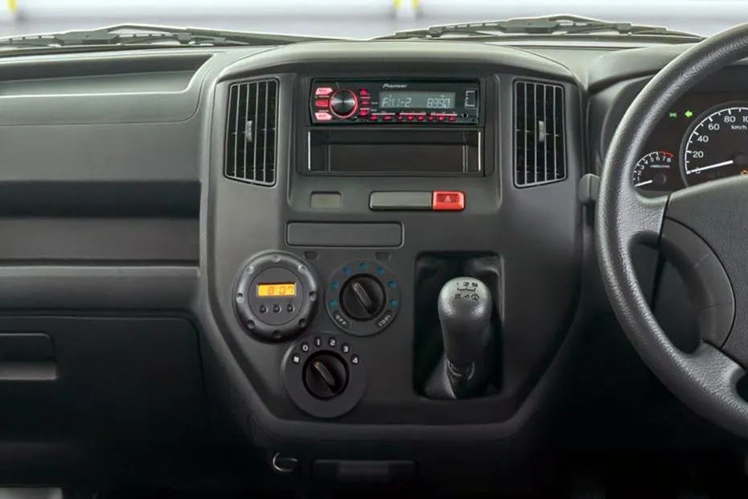
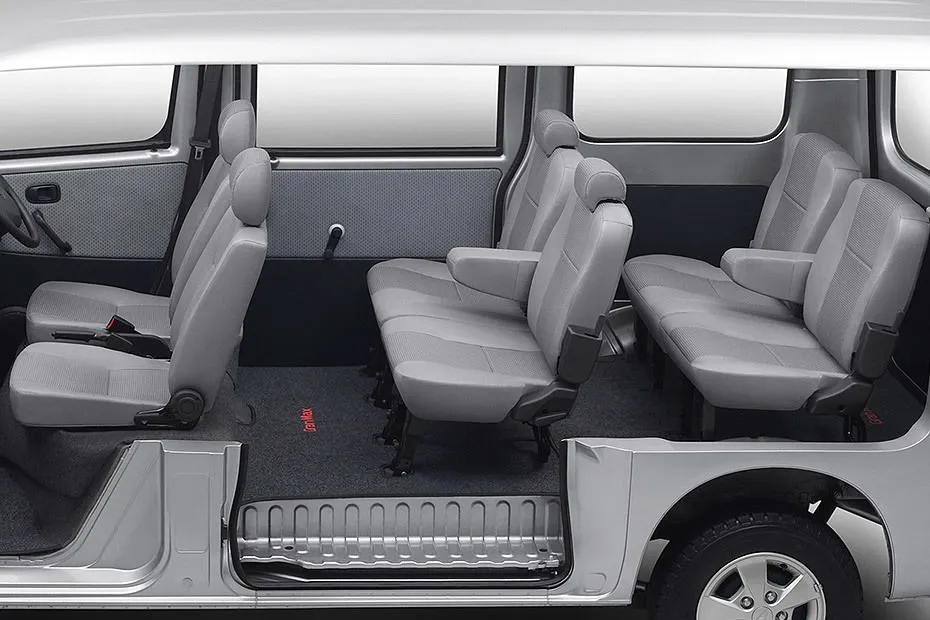
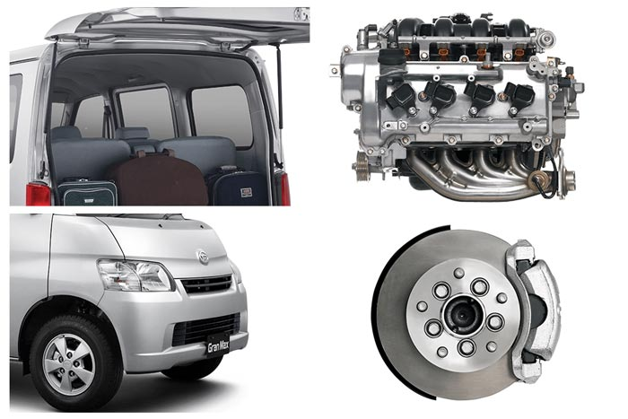

GranMax

Daihatsu GranMax New 2024 hadir untuk memberikan Anda kenyamanan dan keamanan berkendara terbaik. Dengan desain stylish dan sporty serta fitur keamanan unggulan, GranMax siap menemani setiap perjalanan Anda.
- Desain Stylish dan Sporty - Daihatsu GranMax New 2024 tampil dengan desain eksterior yang modern dan sporty, membuatnya terlihat gagah dan menarik di jalan.
- Keamanan Maksimal - Dilengkapi dengan Dual SRS Air Bag, GranMax memberikan perlindungan maksimal untuk pengendara dan penumpang, memastikan keselamatan dalam setiap perjalanan.
- Performa Tangguh dan Efisien - Didukung oleh mesin bensin berkapasitas 1.3L dan 1.5L DOHC VVT-i, GranMax menawarkan performa yang bertenaga namun tetap hemat bahan bakar.
- Kapasitas Luas - GranMax tersedia dalam varian 9 dan 8 seater, dengan dimensi yang luas untuk kenyamanan maksimal penumpang dan kapasitas bagasi yang besar untuk kebutuhan barang bawaan.
Spesifikasi GranMax
| Mesin | 1.3 L |
|---|---|
| Transmisi | Manual |
| Varian | 5 |
| Harga | Rp 230,35 - 239,55 Juta |
| Dimensi | 4045 mm L x 1665 mm W x 1900 mm H |
| Warna | 4 Pilihan Warna |
| Kapasitas | 9 Kursi |
| Ground Clearance | 165 mm |
Interior



Feature & Engine

1.3 DOHC & 1.5 DOHC VVT-i - Mesin yang tangguh dan bertenaga, mampu memaksimalkan performa mobil namun tetap hemat bahan bakar.